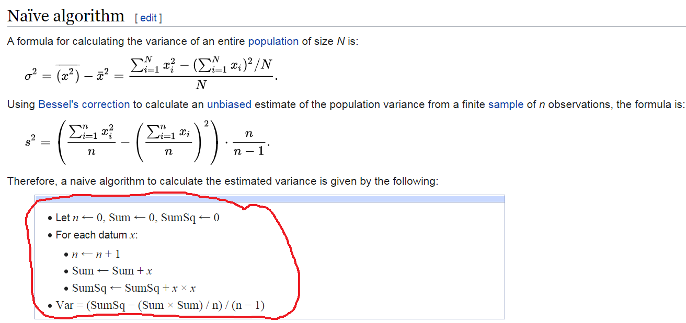

Exercise 1 Solution (W)
Use the functions we learned in Lab 1 to complete Lab 1 Exercise. We will use Right Heart Catheterization Dataset saved in the folder named ‘Data/wrangling/’. The variable list and description can be accessed from Vanderbilt Biostatistics website.
A paper you can access the original table from this paper (doi: 10.1001/jama.1996.03540110043030). We have modified the table and corrected some issues. Please knit your file once you finished and submit the knitted file ONLY.
Problem 1: Basic Manipulation
- Continuous to Categories: Change the Age variable into categories below 50, 50 to below 60, 60 to below 70, 70 to below 80, 80 and above [Hint: the
cutfunction could be helpful]
- Re-order: Re-order the levels of race to white, black and other
- Set reference: Change the reference category for gender to Male
- Count levels: Check how many levels does the variable “cat1” (Primary disease category) have? Regroup the levels for disease categories to “ARF”,“CHF”,“MOSF”,“Other”. [Hint: the
nlevelsandlistfunctions could be helpful]
nlevels(as.factor(rhc$cat1)) # There are nine levels
#> [1] 9
rhc$cat1 <- as.factor(rhc$cat1)
levels(rhc$cat1) <- list(ARF = "ARF", CHF = "CHF",
MOSF = c("MOSF w/Malignancy", "MOSF w/Sepsis"),
Other = c("Cirrhosis", "Colon Cancer", "Coma", "COPD",
"Lung Cancer"))
rhc$cat1 <- factor(rhc$cat1, levels = c("ARF", "CHF", "MOSF", "Other"))
levels(rhc$cat1)
#> [1] "ARF" "CHF" "MOSF" "Other"- Rename levels: Rename the levels of “ca” (Cancer) to “Metastatic”,“None” and “Localized (Yes)”, then re-order the levels to “None”,“Localized (Yes)” and “Metastatic”
- comorbidities:
- Create a new variable called “numcom” to count number of comorbidities illness for each person (12 categories) [Hint: the
rowSumscommand could be helpful], - Report maximum and minimum values of numcom:
# See head of comorbidities
# head(rhc[,c("cardiohx", "chfhx", "dementhx", "psychhx", "chrpulhx", "renalhx",
# "liverhx", "gibledhx", "malighx", "immunhx", "transhx", "amihx")])
# number of comorbidities
rhc$numcom <- rowSums(rhc[,c("cardiohx", "chfhx", "dementhx", "psychhx", "chrpulhx",
"renalhx", "liverhx", "gibledhx", "malighx", "immunhx",
"transhx", "amihx") ])
# maximum and minimum
cbind(Maximum = max(rhc$numcom), Minimum = min(rhc$numcom))
#> Maximum Minimum
#> [1,] 6 0- Anlaytic data: Create a dataset that has only the following variables
age, sex, race, cat1, ca, dnr1, aps1, surv2md1, numcom, adld3p, das2d3pc, temp1, hrt1, meanbp1, resp1, wblc1, pafi1, paco21, ph1, crea1, alb1, scoma1, swang1
name the dataset as rhc2
Problem 2: Table 1
Re-produce the sample table 1 from the rhc2 data (see the Table below). In your table, the variables should be ordered as the same as the sample. Please re-level or re-order the levels if needed. [Hint: the tableone package might be useful]
| No RHC | RHC | |
|---|---|---|
| n | 3551 | 2184 |
| age (%) | ||
| [-Inf,50) | 884 (24.9) | 540 (24.7) |
| [50,60) | 546 (15.4) | 371 (17.0) |
| [60,70) | 812 (22.9) | 577 (26.4) |
| [70,80) | 809 (22.8) | 529 (24.2) |
| [80, Inf) | 500 (14.1) | 167 ( 7.6) |
| sex = Female (%) | 1637 (46.1) | 906 (41.5) |
| race (%) | ||
| white | 2753 (77.5) | 1707 (78.2) |
| black | 585 (16.5) | 335 (15.3) |
| other | 213 ( 6.0) | 142 ( 6.5) |
| cat1 (%) | ||
| ARF | 1581 (44.5) | 909 (41.6) |
| CHF | 247 ( 7.0) | 209 ( 9.6) |
| Other | 955 (26.9) | 208 ( 9.5) |
| MOSF | 768 (21.6) | 858 (39.3) |
| ca (%) | ||
| None | 2652 (74.7) | 1727 (79.1) |
| Localized (Yes) | 638 (18.0) | 334 (15.3) |
| Metastatic | 261 ( 7.4) | 123 ( 5.6) |
| dnr1 = Yes (%) | 499 (14.1) | 155 ( 7.1) |
| aps1 (mean (SD)) | 50.93 (18.81) | 60.74 (20.27) |
| surv2md1 (mean (SD)) | 0.61 (0.19) | 0.57 (0.20) |
| numcom (mean (SD)) | 1.52 (1.17) | 1.48 (1.13) |
| adld3p (mean (SD)) | 1.24 (1.86) | 1.02 (1.69) |
| das2d3pc (mean (SD)) | 20.37 (5.48) | 20.70 (5.03) |
| temp1 (mean (SD)) | 37.63 (1.74) | 37.59 (1.83) |
| hrt1 (mean (SD)) | 112.87 (40.94) | 118.93 (41.47) |
| meanbp1 (mean (SD)) | 84.87 (38.87) | 68.20 (34.24) |
| resp1 (mean (SD)) | 28.98 (13.95) | 26.65 (14.17) |
| wblc1 (mean (SD)) | 15.26 (11.41) | 16.27 (12.55) |
| pafi1 (mean (SD)) | 240.63 (116.66) | 192.43 (105.54) |
| paco21 (mean (SD)) | 39.95 (14.24) | 36.79 (10.97) |
| ph1 (mean (SD)) | 7.39 (0.11) | 7.38 (0.11) |
| crea1 (mean (SD)) | 1.92 (2.03) | 2.47 (2.05) |
| alb1 (mean (SD)) | 3.16 (0.67) | 2.98 (0.93) |
| scoma1 (mean (SD)) | 22.25 (31.37) | 18.97 (28.26) |
rhc2$cat1 <- factor(rhc2$cat1, levels = c("ARF", "CHF", "Other", "MOSF"))
vars <- c("age", "sex", "race", "cat1", "ca", "dnr1", "aps1", "surv2md1", "numcom",
"adld3p", "das2d3pc", "temp1", "hrt1", "meanbp1", "resp1", "wblc1",
"pafi1", "paco21", "ph1", "crea1", "alb1", "scoma1")
library(tableone)
tab1a <- CreateTableOne(vars = vars, data = rhc2, strata = "swang1", includeNA = TRUE,
test = F)
print(tab1a)
#> Stratified by swang1
#> No RHC RHC
#> n 3551 2184
#> age (%)
#> [-Inf,50) 884 (24.9) 540 (24.7)
#> [50,60) 546 (15.4) 371 (17.0)
#> [60,70) 812 (22.9) 577 (26.4)
#> [70,80) 809 (22.8) 529 (24.2)
#> [80, Inf) 500 (14.1) 167 ( 7.6)
#> sex = Female (%) 1637 (46.1) 906 (41.5)
#> race (%)
#> white 2753 (77.5) 1707 (78.2)
#> black 585 (16.5) 335 (15.3)
#> other 213 ( 6.0) 142 ( 6.5)
#> cat1 (%)
#> ARF 1581 (44.5) 909 (41.6)
#> CHF 247 ( 7.0) 209 ( 9.6)
#> Other 955 (26.9) 208 ( 9.5)
#> MOSF 768 (21.6) 858 (39.3)
#> ca (%)
#> None 2652 (74.7) 1727 (79.1)
#> Localized (Yes) 638 (18.0) 334 (15.3)
#> Metastatic 261 ( 7.4) 123 ( 5.6)
#> dnr1 = Yes (%) 499 (14.1) 155 ( 7.1)
#> aps1 (mean (SD)) 50.93 (18.81) 60.74 (20.27)
#> surv2md1 (mean (SD)) 0.61 (0.19) 0.57 (0.20)
#> numcom (mean (SD)) 1.52 (1.17) 1.48 (1.13)
#> adld3p (mean (SD)) 1.24 (1.86) 1.02 (1.69)
#> das2d3pc (mean (SD)) 20.37 (5.48) 20.70 (5.03)
#> temp1 (mean (SD)) 37.63 (1.74) 37.59 (1.83)
#> hrt1 (mean (SD)) 112.87 (40.94) 118.93 (41.47)
#> meanbp1 (mean (SD)) 84.87 (38.87) 68.20 (34.24)
#> resp1 (mean (SD)) 28.98 (13.95) 26.65 (14.17)
#> wblc1 (mean (SD)) 15.26 (11.41) 16.27 (12.55)
#> pafi1 (mean (SD)) 240.63 (116.66) 192.43 (105.54)
#> paco21 (mean (SD)) 39.95 (14.24) 36.79 (10.97)
#> ph1 (mean (SD)) 7.39 (0.11) 7.38 (0.11)
#> crea1 (mean (SD)) 1.92 (2.03) 2.47 (2.05)
#> alb1 (mean (SD)) 3.16 (0.67) 2.98 (0.93)
#> scoma1 (mean (SD)) 22.25 (31.37) 18.97 (28.26)Problem 3: Table 1 for subset
Produce a similar table as Problem 2 but with only male sex and ARF primary disease category (cat1). Add the overall column in the same table. [Hint: filter command could be useful]
rhc2.M <- filter(rhc2, sex == "Male" & cat1 == "ARF")
vars <- c("age", "race", "ca", "dnr1", "aps1", "surv2md1", "numcom", "adld3p",
"das2d3pc", "temp1", "hrt1", "meanbp1", "resp1", "wblc1", "pafi1",
"paco21", "ph1", "crea1", "alb1", "scoma1")
tab1b <- CreateTableOne(vars = vars, data = rhc2.M, strata = "swang1", includeNA = T,
addOverall = T, test = F)
print(tab1b)
#> Stratified by swang1
#> Overall No RHC RHC
#> n 1382 888 494
#> age (%)
#> [-Inf,50) 382 (27.6) 267 (30.1) 115 (23.3)
#> [50,60) 198 (14.3) 127 (14.3) 71 (14.4)
#> [60,70) 299 (21.6) 174 (19.6) 125 (25.3)
#> [70,80) 340 (24.6) 201 (22.6) 139 (28.1)
#> [80, Inf) 163 (11.8) 119 (13.4) 44 ( 8.9)
#> race (%)
#> white 1116 (80.8) 700 (78.8) 416 (84.2)
#> black 192 (13.9) 141 (15.9) 51 (10.3)
#> other 74 ( 5.4) 47 ( 5.3) 27 ( 5.5)
#> ca (%)
#> None 1068 (77.3) 670 (75.5) 398 (80.6)
#> Localized (Yes) 253 (18.3) 173 (19.5) 80 (16.2)
#> Metastatic 61 ( 4.4) 45 ( 5.1) 16 ( 3.2)
#> dnr1 = Yes (%) 136 ( 9.8) 105 (11.8) 31 ( 6.3)
#> aps1 (mean (SD)) 54.51 (18.94) 51.90 (18.21) 59.20 (19.34)
#> surv2md1 (mean (SD)) 0.61 (0.17) 0.63 (0.17) 0.59 (0.17)
#> numcom (mean (SD)) 1.34 (1.16) 1.32 (1.16) 1.38 (1.15)
#> adld3p (mean (SD)) 1.00 (1.79) 1.00 (1.78) 1.01 (1.80)
#> das2d3pc (mean (SD)) 21.74 (5.62) 21.67 (5.72) 21.87 (5.44)
#> temp1 (mean (SD)) 37.96 (1.71) 38.02 (1.69) 37.84 (1.76)
#> hrt1 (mean (SD)) 115.96 (39.26) 115.52 (39.39) 116.76 (39.06)
#> meanbp1 (mean (SD)) 79.08 (36.38) 83.69 (36.81) 70.80 (34.11)
#> resp1 (mean (SD)) 29.01 (14.35) 30.27 (14.21) 26.73 (14.33)
#> wblc1 (mean (SD)) 15.80 (12.03) 15.92 (11.50) 15.58 (12.93)
#> pafi1 (mean (SD)) 188.09 (100.74) 208.05 (102.50) 152.20 (86.70)
#> paco21 (mean (SD)) 37.45 (10.03) 38.08 (10.56) 36.32 (8.89)
#> ph1 (mean (SD)) 7.40 (0.10) 7.40 (0.10) 7.39 (0.10)
#> crea1 (mean (SD)) 2.22 (2.25) 2.10 (2.33) 2.45 (2.09)
#> alb1 (mean (SD)) 3.07 (0.68) 3.12 (0.66) 2.98 (0.70)
#> scoma1 (mean (SD)) 18.42 (27.05) 19.48 (28.07) 16.51 (25.02)Problem 4: Considering eligibility criteria
Produce a similar table as Problem 2 but only for the subjects who meet all of the following eligibility criteria: (i) age is equal to or above 50, (ii) age is below 80 (iii) Glasgow Coma Score is below 61 and (iv) Primary disease categories are either ARF or MOSF. [Hint: droplevels.data.frame can be a useful function]
rhc3 <- rhc2
rhc3$eligible <- with(rhc3, ifelse((age=="[50,60)" | age=="[60,70)" | age=="[70,80)") &
scoma1 < 61 & (cat1=="ARF" | cat1 == "MOSF"), 1, 0))
rhc3 <- rhc3[rhc3$eligible==1,]
rhc3 <- droplevels.data.frame(rhc3, exclude = c("[-Inf,50)", "[80, Inf)", "61+",
"CHF", "Other"))
vars <- c("age", "sex", "race", "cat1", "ca", "dnr1", "aps1", "surv2md1", "numcom",
"adld3p", "das2d3pc", "temp1", "hrt1", "meanbp1", "resp1", "wblc1",
"pafi1", "paco21", "ph1", "crea1", "alb1", "scoma1")
CreateTableOne(vars = vars, data = rhc3, strata = "swang1", includeNA = F, test = F)
#> Stratified by swang1
#> No RHC RHC
#> n 1226 1102
#> age (%)
#> [50,60) 321 (26.2) 263 (23.9)
#> [60,70) 429 (35.0) 416 (37.7)
#> [70,80) 476 (38.8) 423 (38.4)
#> sex = Female (%) 550 (44.9) 469 (42.6)
#> race (%)
#> white 977 (79.7) 908 (82.4)
#> black 187 (15.3) 135 (12.3)
#> other 62 ( 5.1) 59 ( 5.4)
#> cat1 = MOSF (%) 417 (34.0) 545 (49.5)
#> ca (%)
#> None 812 (66.2) 816 (74.0)
#> Localized (Yes) 283 (23.1) 212 (19.2)
#> Metastatic 131 (10.7) 74 ( 6.7)
#> dnr1 = Yes (%) 150 (12.2) 67 ( 6.1)
#> aps1 (mean (SD)) 54.57 (18.13) 61.82 (18.77)
#> surv2md1 (mean (SD)) 0.59 (0.16) 0.55 (0.16)
#> numcom (mean (SD)) 1.51 (1.14) 1.50 (1.12)
#> adld3p (mean (SD)) 1.18 (1.82) 1.22 (1.90)
#> das2d3pc (mean (SD)) 20.22 (5.22) 20.57 (4.82)
#> temp1 (mean (SD)) 37.85 (1.72) 37.67 (1.82)
#> hrt1 (mean (SD)) 116.68 (39.28) 120.02 (40.26)
#> meanbp1 (mean (SD)) 79.99 (37.36) 67.57 (33.53)
#> resp1 (mean (SD)) 30.57 (12.90) 26.34 (13.90)
#> wblc1 (mean (SD)) 16.35 (13.38) 16.91 (13.06)
#> pafi1 (mean (SD)) 226.30 (110.48) 178.37 (94.37)
#> paco21 (mean (SD)) 37.94 (11.25) 36.38 (10.44)
#> ph1 (mean (SD)) 7.40 (0.10) 7.38 (0.10)
#> crea1 (mean (SD)) 2.20 (2.34) 2.53 (2.06)
#> alb1 (mean (SD)) 3.09 (0.66) 2.94 (1.08)
#> scoma1 (mean (SD)) 14.22 (18.48) 13.65 (17.91)Optional
Optional 1: Missing values
- Any variables included in rhc2 data had missing values? Name that variable. [Hint:
applyfunction could be helpful]
- Count how many NAs does that variable have?
- Produce a table 1 for a complete case data (no missing observations) stratified by
swang1.
rhc.complete <- rhc2[complete.cases(rhc2), ]
vars <- c("age", "sex", "race", "cat1", "ca", "dnr1", "aps1", "surv2md1", "numcom",
"adld3p", "das2d3pc", "temp1", "hrt1", "meanbp1", "resp1", "wblc1",
"pafi1", "paco21", "ph1", "crea1", "alb1", "scoma1")
CreateTableOne(vars = vars, data = rhc.complete, strata = "swang1", includeNA = F,
test = F)
#> Stratified by swang1
#> No RHC RHC
#> n 1049 390
#> age (%)
#> [-Inf,50) 264 (25.2) 113 (29.0)
#> [50,60) 160 (15.3) 85 (21.8)
#> [60,70) 261 (24.9) 99 (25.4)
#> [70,80) 238 (22.7) 70 (17.9)
#> [80, Inf) 126 (12.0) 23 ( 5.9)
#> sex = Female (%) 480 (45.8) 137 (35.1)
#> race (%)
#> white 813 (77.5) 297 (76.2)
#> black 176 (16.8) 67 (17.2)
#> other 60 ( 5.7) 26 ( 6.7)
#> cat1 (%)
#> ARF 429 (40.9) 127 (32.6)
#> CHF 174 (16.6) 129 (33.1)
#> Other 266 (25.4) 24 ( 6.2)
#> MOSF 180 (17.2) 110 (28.2)
#> ca (%)
#> None 797 (76.0) 324 (83.1)
#> Localized (Yes) 171 (16.3) 46 (11.8)
#> Metastatic 81 ( 7.7) 20 ( 5.1)
#> dnr1 = Yes (%) 87 ( 8.3) 11 ( 2.8)
#> aps1 (mean (SD)) 48.36 (16.34) 49.38 (19.71)
#> surv2md1 (mean (SD)) 0.70 (0.15) 0.69 (0.17)
#> numcom (mean (SD)) 1.74 (1.22) 1.76 (1.23)
#> adld3p (mean (SD)) 1.24 (1.86) 1.02 (1.69)
#> das2d3pc (mean (SD)) 20.36 (7.28) 20.36 (6.96)
#> temp1 (mean (SD)) 37.35 (1.66) 37.24 (1.61)
#> hrt1 (mean (SD)) 112.23 (38.20) 108.66 (39.22)
#> meanbp1 (mean (SD)) 87.35 (37.97) 70.91 (33.38)
#> resp1 (mean (SD)) 30.43 (11.65) 25.25 (12.73)
#> wblc1 (mean (SD)) 14.45 (11.16) 14.75 (13.09)
#> pafi1 (mean (SD)) 250.90 (112.53) 238.90 (104.11)
#> paco21 (mean (SD)) 41.77 (14.86) 37.16 (8.57)
#> ph1 (mean (SD)) 7.39 (0.10) 7.40 (0.09)
#> crea1 (mean (SD)) 2.03 (2.27) 2.22 (2.05)
#> alb1 (mean (SD)) 3.26 (0.65) 3.19 (0.64)
#> scoma1 (mean (SD)) 5.25 (15.83) 6.54 (17.20)Optional 2: Calculating variance of a sample
Write a function for Bessel’s correction to calculate an unbiased estimate of the population variance from a finite sample (a vector of 100 observations, consisting of numbers from 1 to 100).
Hint: Take a closer look at the functions, loops and algorithms shown in lab materials. Use a for loop, utilizing the following pseudocode of the algorithm:

Verify that estimated variance with the following variance function output in R: